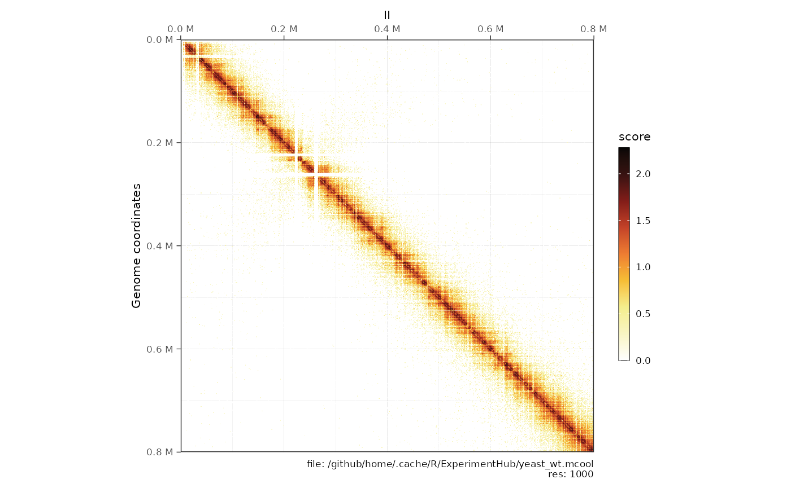
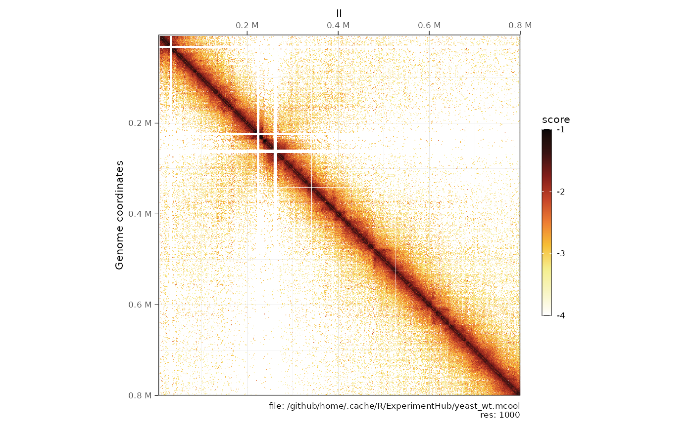
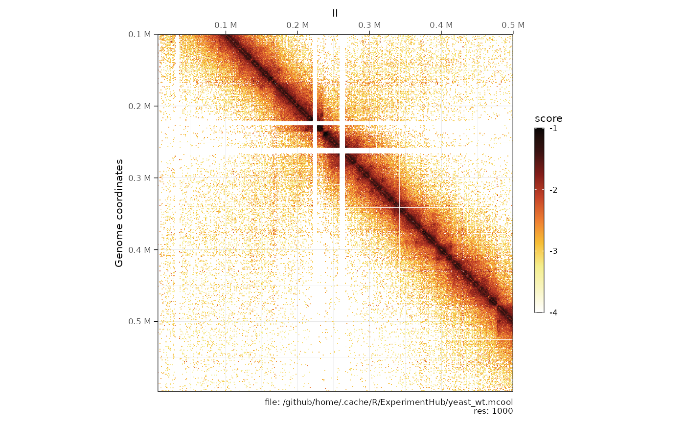
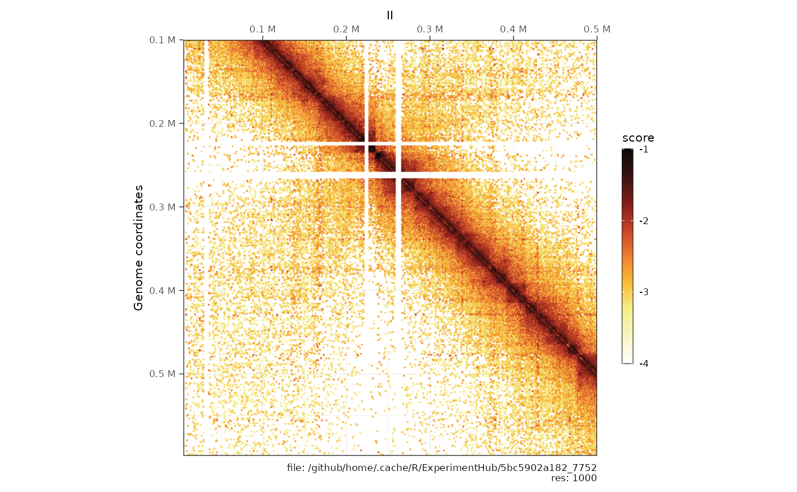
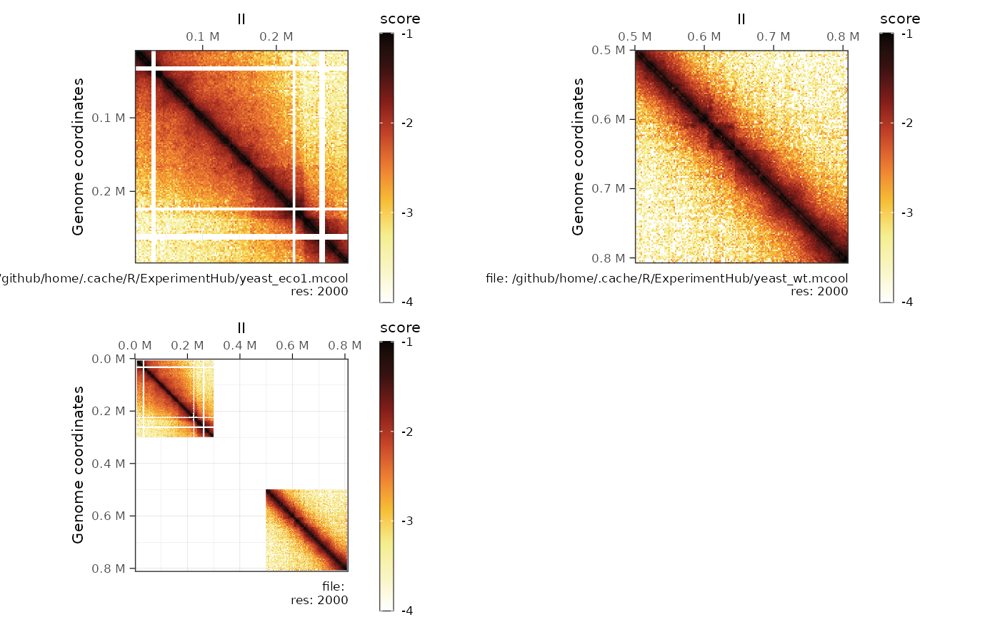
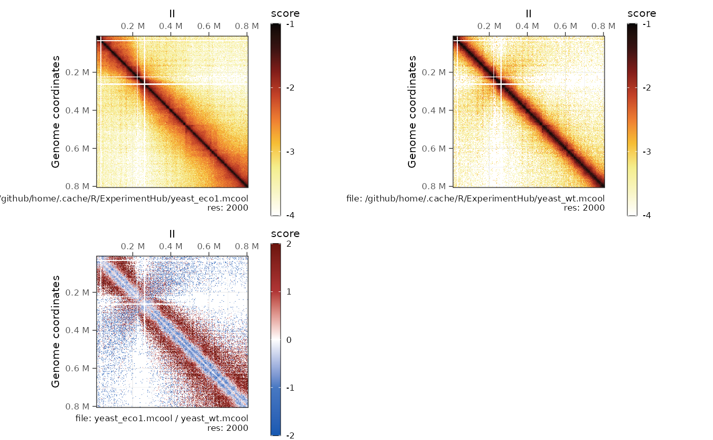
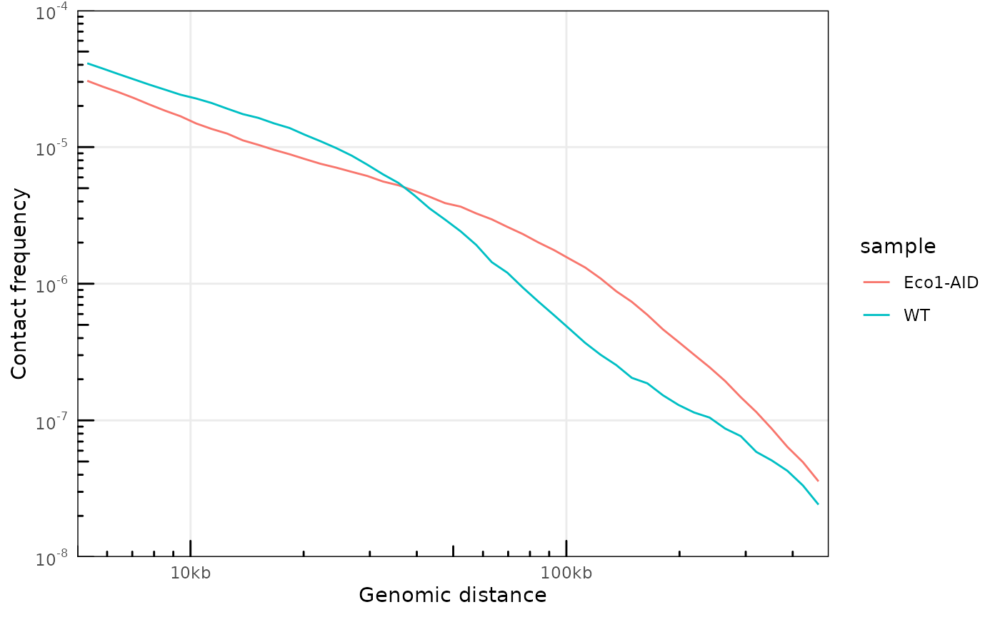
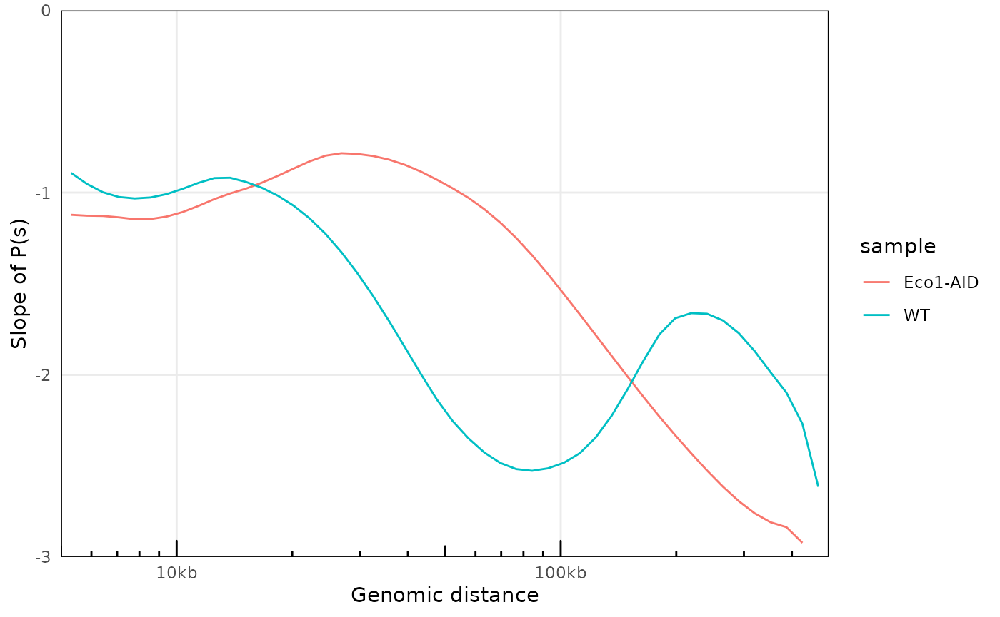

HiContacts provides tools to import (m)cool matrices in
R and work with them there.
It creates a new contacts class of objects, built on
pre-existing Bioconductor objects, namely InteractionSet,
GenomicInterations and ContactMatrix
(Lun, Perry & Ing-Simmons, F1000Research 2016), and
provides analytical and visualization
tools to investigate contact maps.
Import a .(m)cool file as contacts
The HiContactsData package gives access to a range of
toy datasets stored by Bioconductor in the
ExperimentHub.
library(HiContactsData)
cool_file <- HiContactsData('yeast_wt', format = 'cool')
#> snapshotDate(): 2022-08-23
#> see ?HiContactsData and browseVignettes('HiContactsData') for documentation
#> loading from cache
cool_file
#> [1] "/github/home/.cache/R/ExperimentHub/yeast_wt.cool"The contacts() function can be used to import a Hi-C
matrix locally stored as a cool/mcool file.
library(ggplot2)
library(dplyr)
library(GenomicRanges)
library(HiContacts)
range <- 'I:20000-80000' # range of interest
contacts <- contacts(cool_file, focus = range)
contacts
#> sparse `contacts` object with 1,653 interactions over 59 regions
#> file: /github/home/.cache/R/ExperimentHub/yeast_wt.cool
#> focus: I:20,000-80,000
#> ------------
#> metadata(1): path
#> resolutions(1): 1000
#> current resolution(1000): 1653 interactions in memory
#> bins: 12079
#> regions: 59
#> scores(2): raw balanced
#> features: loops(0) borders(0) compartments(0) viewpoints(0)
#> pairs: N/Acool2gi works with .mcool files as well: in
this case, the user needs to specify the resolution at which count
values are recovered.
mcool_file <- HiContactsData('yeast_wt', format = 'mcool')
#> snapshotDate(): 2022-08-23
#> see ?HiContactsData and browseVignettes('HiContactsData') for documentation
#> loading from cache
range <- 'II:0-800000' # range of interest
lsCoolResolutions(mcool_file)
#> resolutions(5): 1000 2000 4000 8000 16000
#>
# contacts <- contacts(mcool_file, focus = range) # This would throw an error!
contacts <- contacts(mcool_file, focus = range, res = 1000)
contacts
#> sparse `contacts` object with 73,257 interactions over 790 regions
#> file: /github/home/.cache/R/ExperimentHub/yeast_wt.mcool
#> focus: II:0-800,000
#> ------------
#> metadata(1): path
#> resolutions(5): 1000 2000 4000 8000 16000
#> current resolution(1000): 73257 interactions in memory
#> bins: 12079
#> regions: 790
#> scores(2): raw balanced
#> features: loops(0) borders(0) compartments(0) viewpoints(0)
#> pairs: N/APlotting matrices
Plot matrix heatmaps
## Matrix centered over diagonal
contacts <- contacts(mcool_file, focus = 'II:0-800000', res = 1000)
plotMatrix(contacts, use.scores = 'raw')
plotMatrix(contacts, use.scores = 'balanced', limits = c(-4, -1))
## Uncentered matrix
contacts <- contacts(mcool_file, focus = 'II:0-500000 x II:100000-600000', res = 1000)
plotMatrix(contacts, use.scores = 'balanced', limits = c(-4, -1))
Plot loops
mcool_file <- HiContactsData('yeast_wt', format = 'mcool')
#> snapshotDate(): 2022-08-23
#> see ?HiContactsData and browseVignettes('HiContactsData') for documentation
#> loading from cache
loops <- system.file("extdata", 'S288C-loops.bedpe', package = 'HiContacts') %>%
rtracklayer::import() %>%
InteractionSet::makeGInteractionsFromGRangesPairs()
contacts(mcool_file, focus = 'IV', res = 1000) %>%
detrend() %>%
plotMatrix(use.scores = 'detrended', loops = loops, scale = 'linear', limits = c(-2, 2))
Plot borders
borders <- system.file("extdata", 'S288C-borders.bed', package = 'HiContacts') %>%
rtracklayer::import()
contacts(mcool_file, focus = 'IV', res = 1000) %>%
detrend() %>%
plotMatrix(use.scores = 'detrended', loops = loops, borders = borders, scale = 'linear', limits = c(-2, 2))
Digging into contact matrices: transformation, comparison and arithmetics
Subsetting a contact map
mcool_file <- HiContactsData('yeast_wt', format = 'mcool')
#> snapshotDate(): 2022-08-23
#> see ?HiContactsData and browseVignettes('HiContactsData') for documentation
#> loading from cache
contacts <- contacts(mcool_file, focus = 'II', res = 2000)
contacts_subset <- contacts[
start(anchors(contacts)[[1]]) < 300000 & end(anchors(contacts)[[1]]) < 300000 &
start(anchors(contacts)[[2]]) < 300000 & end(anchors(contacts)[[2]]) < 300000
]
cowplot::plot_grid(
plotMatrix(contacts, use.scores = 'balanced', scale = 'log10', limits = c(-4, -1)),
plotMatrix(contacts_subset, use.scores = 'balanced', scale = 'log10', limits = c(-4, -1))
)
Computing autocorrelated contact map
mcool_file <- HiContactsData('mESCs', format = 'mcool')
#> snapshotDate(): 2022-08-23
#> see ?HiContactsData and browseVignettes('HiContactsData') for documentation
#> loading from cache
contacts <- contacts(mcool_file, focus = 'chr2', res = 160000)
contacts %>%
autocorrelate(ignore_ndiags = 20) %>%
plotMatrix(scale = 'linear', limits = c(-1, 1))
Detrending contact map (map over expected)
mcool_file <- HiContactsData('mESCs', format = 'mcool')
#> snapshotDate(): 2022-08-23
#> see ?HiContactsData and browseVignettes('HiContactsData') for documentation
#> loading from cache
contacts <- contacts(mcool_file, focus = 'chr18:20000000-35000000', res = 40000)
detrended_contacts <- detrend(contacts)
cowplot::plot_grid(
plotMatrix(contacts, use.scores = 'balanced', limits = c(-4, -1)),
plotMatrix(detrended_contacts, use.scores = 'expected'),
plotMatrix(detrended_contacts, use.scores = 'detrended', scale = 'linear', limits = c(-3, 3))
)
Summing two maps
mcool_file_1 <- HiContactsData('yeast_eco1', format = 'mcool')
#> snapshotDate(): 2022-08-23
#> see ?HiContactsData and browseVignettes('HiContactsData') for documentation
#> loading from cache
mcool_file_2 <- HiContactsData('yeast_wt', format = 'mcool')
#> snapshotDate(): 2022-08-23
#> see ?HiContactsData and browseVignettes('HiContactsData') for documentation
#> loading from cache
contacts_1 <- contacts(mcool_file_1, focus = 'II', res = 2000)
contacts_1 <- contacts_1[
start(anchors(contacts_1)[[1]]) < 300000 & end(anchors(contacts_1)[[1]]) < 300000 &
start(anchors(contacts_1)[[2]]) < 300000 & end(anchors(contacts_1)[[2]]) < 300000
]
contacts_2 <- contacts(mcool_file_2, focus = 'II', res = 2000)
contacts_2 <- contacts_2[
start(anchors(contacts_2)[[1]]) > 500000 & end(anchors(contacts_2)[[1]]) > 500000 &
start(anchors(contacts_2)[[2]]) > 500000 & end(anchors(contacts_2)[[2]]) > 500000
]
merged_contacts <- merge(contacts_1, contacts_2)
merged_contacts
#> merged `contacts` object with 18,861 interactions over 404 regions
#> file:
#> focus: II, II
#> ------------
#> metadata(3): path merging operation
#> resolutions(5): 1000 2000 4000 8000 16000
#> current resolution(2000): 18861 interactions in memory
#> bins: 6045
#> regions: 404
#> scores(2): raw balanced
#> features: ()
#> pairs: N/A
cowplot::plot_grid(
plotMatrix(contacts_1, use.scores = 'balanced', scale = 'log10', limits = c(-4, -1)),
plotMatrix(contacts_2, use.scores = 'balanced', scale = 'log10', limits = c(-4, -1)),
plotMatrix(merged_contacts, use.scores = 'balanced', scale = 'log10', limits = c(-4, -1))
)
Computing ratio between two maps
mcool_file_1 <- HiContactsData('yeast_eco1', format = 'mcool')
#> snapshotDate(): 2022-08-23
#> see ?HiContactsData and browseVignettes('HiContactsData') for documentation
#> loading from cache
mcool_file_2 <- HiContactsData('yeast_wt', format = 'mcool')
#> snapshotDate(): 2022-08-23
#> see ?HiContactsData and browseVignettes('HiContactsData') for documentation
#> loading from cache
contacts_1 <- contacts(mcool_file_1, focus = 'II', res = 2000)
contacts_2 <- contacts(mcool_file_2, focus = 'II', res = 2000)
div_contacts <- divide(contacts_1, by = contacts_2)
#> Warning: The `x` argument of `as_tibble.matrix()` must have unique column names if `.name_repair` is omitted as of tibble 2.0.0.
#> Using compatibility `.name_repair`.
div_contacts
#> ratio `contacts` object with 66,607 interactions over 404 regions
#> file: yeast_eco1.mcool / yeast_wt.mcool
#> focus: II
#> ------------
#> metadata(3): path x_path by_path
#> resolutions(1): 2000
#> current resolution(2000): 66607 interactions in memory
#> bins: 6045
#> regions: 404
#> scores(1): ratio
#> features: ()
#> pairs: N/A
cowplot::plot_grid(
plotMatrix(contacts_1, use.scores = 'balanced', scale = 'log10', limits = c(-4, -1)),
plotMatrix(contacts_2, use.scores = 'balanced', scale = 'log10', limits = c(-4, -1)),
plotMatrix(div_contacts, use.scores = 'ratio', scale = 'log2', limits = c(-2, 2), cmap = bwr_colors())
)
Virtual 4C
mcool_file <- HiContactsData('mESCs', format = 'mcool')
#> snapshotDate(): 2022-08-23
#> see ?HiContactsData and browseVignettes('HiContactsData') for documentation
#> loading from cache
contacts <- contacts(mcool_file, focus = 'chr18:20000000-35000000', res = 40000)
v4C <- virtual4C(contacts, viewpoint = GRanges('chr18:31000000-31050000'))
cowplot::plot_grid(
plot4C(v4C, aes(x = center, y = score)),
plotMatrix(contacts, use.scores = 'balanced', limits = c(-4, -1)),
ncol = 1, align = 'hv', axis = 'tblr', rel_heights = c(0.2, 1)
)
Cis-trans ratios
mcool_file <- HiContactsData('yeast_wt', format = 'mcool')
#> snapshotDate(): 2022-08-23
#> see ?HiContactsData and browseVignettes('HiContactsData') for documentation
#> loading from cache
contacts <- contacts(mcool_file, res = 1000)
cis_trans(contacts)
#> # A tibble: 16 × 6
#> # Groups: chr [16]
#> chr cis trans n_total cis_pct trans_pct
#> <fct> <int> <int> <int> <dbl> <dbl>
#> 1 I 186326 96736 283062 0.658 0.342
#> 2 II 942728 273941 1216669 0.775 0.225
#> 3 III 303980 127069 431049 0.705 0.295
#> 4 IV 1858062 418193 2276255 0.816 0.184
#> 5 V 607090 220861 827951 0.733 0.267
#> 6 VI 280282 127768 408050 0.687 0.313
#> 7 VII 1228532 335891 1564423 0.785 0.215
#> 8 VIII 574086 205114 779200 0.737 0.263
#> 9 IX 474182 179273 653455 0.726 0.274
#> 10 X 834654 259233 1093887 0.763 0.237
#> 11 XI 775240 245889 1021129 0.759 0.241
#> 12 XII 1182742 278049 1460791 0.810 0.190
#> 13 XIII 1084810 296314 1381124 0.785 0.215
#> 14 XIV 852516 256624 1109140 0.769 0.231
#> 15 XV 1274066 351117 1625183 0.784 0.216
#> 16 XVI 1070152 313348 1383500 0.774 0.226P(s)
# Without a pairs file
mcool_file <- HiContactsData('yeast_wt', format = 'mcool')
#> snapshotDate(): 2022-08-23
#> see ?HiContactsData and browseVignettes('HiContactsData') for documentation
#> loading from cache
contacts <- contacts(mcool_file, res = 1000)
ps <- getPs(contacts)
#> pairsFile not specified. The P(s) curve will be an approximation.
plotPs(ps, aes(x = binned_distance, y = norm_p))
#> Warning: Removed 18 row(s) containing missing values (geom_path).
# With a pairs file
pairsFile(contacts) <- HiContactsData('yeast_wt', format = 'pairs.gz')
#> snapshotDate(): 2022-08-23
#> see ?HiContactsData and browseVignettes('HiContactsData') for documentation
#> loading from cache
ps <- getPs(contacts)
#> Importing pairs file /github/home/.cache/R/ExperimentHub/yeast_wt.pairs.gz in memory. This may take a while...
plotPs(ps, aes(x = binned_distance, y = norm_p))
#> Warning: Removed 67 row(s) containing missing values (geom_path).
plotPsSlope(ps, aes(x = binned_distance, y = slope))
#> Warning: Removed 67 row(s) containing missing values (geom_path).
# Comparing P(s) curves
c1 <- contacts(
HiContactsData('yeast_wt', format = 'mcool'),
res = 1000,
pairs = HiContactsData('yeast_wt', format = 'pairs.gz')
)
#> snapshotDate(): 2022-08-23
#> see ?HiContactsData and browseVignettes('HiContactsData') for documentation
#> loading from cache
#> snapshotDate(): 2022-08-23
#> see ?HiContactsData and browseVignettes('HiContactsData') for documentation
#> loading from cache
c2 <- contacts(
HiContactsData('yeast_eco1', format = 'mcool'),
res = 1000,
pairs = HiContactsData('yeast_eco1', format = 'pairs.gz')
)
#> snapshotDate(): 2022-08-23
#> see ?HiContactsData and browseVignettes('HiContactsData') for documentation
#> loading from cache
#> snapshotDate(): 2022-08-23
#> see ?HiContactsData and browseVignettes('HiContactsData') for documentation
#> loading from cache
ps_1 <- getPs(c1) %>% mutate(sample = 'WT')
#> Importing pairs file /github/home/.cache/R/ExperimentHub/yeast_wt.pairs.gz in memory. This may take a while...
ps_2 <- getPs(c2) %>% mutate(sample = 'Eco1-AID')
#> Importing pairs file /github/home/.cache/R/ExperimentHub/yeast_eco1.pairs.gz in memory. This may take a while...
ps <- rbind(ps_1, ps_2)
plotPs(ps, aes(x = binned_distance, y = norm_p, group = sample, color = sample))
#> Warning: Removed 134 row(s) containing missing values (geom_path).
plotPsSlope(ps, aes(x = binned_distance, y = slope, group = sample, color = sample))
#> Warning: Removed 135 row(s) containing missing values (geom_path).
Session info
sessionInfo()
#> R version 4.2.1 (2022-06-23)
#> Platform: x86_64-pc-linux-gnu (64-bit)
#> Running under: Ubuntu 20.04.5 LTS
#>
#> Matrix products: default
#> BLAS: /usr/lib/x86_64-linux-gnu/openblas-pthread/libblas.so.3
#> LAPACK: /usr/lib/x86_64-linux-gnu/openblas-pthread/liblapack.so.3
#>
#> locale:
#> [1] LC_CTYPE=en_US.UTF-8 LC_NUMERIC=C
#> [3] LC_TIME=en_US.UTF-8 LC_COLLATE=en_US.UTF-8
#> [5] LC_MONETARY=en_US.UTF-8 LC_MESSAGES=en_US.UTF-8
#> [7] LC_PAPER=en_US.UTF-8 LC_NAME=C
#> [9] LC_ADDRESS=C LC_TELEPHONE=C
#> [11] LC_MEASUREMENT=en_US.UTF-8 LC_IDENTIFICATION=C
#>
#> attached base packages:
#> [1] stats4 stats graphics grDevices utils datasets methods
#> [8] base
#>
#> other attached packages:
#> [1] HiContacts_0.99.0 HiContactsData_0.99.3 ExperimentHub_2.4.0
#> [4] AnnotationHub_3.4.0 BiocFileCache_2.5.0 dbplyr_2.2.1
#> [7] GenomicRanges_1.49.1 GenomeInfoDb_1.33.7 IRanges_2.31.2
#> [10] S4Vectors_0.35.3 BiocGenerics_0.43.4 dplyr_1.0.10
#> [13] ggplot2_3.3.6
#>
#> loaded via a namespace (and not attached):
#> [1] backports_1.4.1 Hmisc_4.7-1
#> [3] systemfonts_1.0.4 igraph_1.3.4
#> [5] lazyeval_0.2.2 splines_4.2.1
#> [7] BiocParallel_1.31.12 digest_0.6.29
#> [9] ensembldb_2.21.4 htmltools_0.5.3
#> [11] fansi_1.0.3 magrittr_2.0.3
#> [13] checkmate_2.1.0 memoise_2.0.1
#> [15] BSgenome_1.65.2 cluster_2.1.4
#> [17] InteractionSet_1.25.0 Biostrings_2.65.6
#> [19] matrixStats_0.62.0 pkgdown_2.0.6.9000
#> [21] prettyunits_1.1.1 jpeg_0.1-9
#> [23] colorspace_2.0-3 blob_1.2.3
#> [25] rappdirs_0.3.3 textshaping_0.3.6
#> [27] xfun_0.33 crayon_1.5.1
#> [29] RCurl_1.98-1.8 jsonlite_1.8.0
#> [31] zeallot_0.1.0 VariantAnnotation_1.43.3
#> [33] survival_3.4-0 glue_1.6.2
#> [35] gtable_0.3.1 zlibbioc_1.43.0
#> [37] XVector_0.37.1 DelayedArray_0.23.1
#> [39] plyranges_1.17.0 Rhdf5lib_1.19.2
#> [41] scales_1.2.1 DBI_1.1.3
#> [43] Rcpp_1.0.9 xtable_1.8-4
#> [45] progress_1.2.2 htmlTable_2.4.1
#> [47] reticulate_1.26 foreign_0.8-82
#> [49] bit_4.0.4 Formula_1.2-4
#> [51] htmlwidgets_1.5.4 httr_1.4.4
#> [53] RColorBrewer_1.1-3 ellipsis_0.3.2
#> [55] farver_2.1.1 pkgconfig_2.0.3
#> [57] XML_3.99-0.10 Gviz_1.41.1
#> [59] nnet_7.3-17 sass_0.4.2
#> [61] deldir_1.0-6 utf8_1.2.2
#> [63] labeling_0.4.2 tidyselect_1.1.2
#> [65] rlang_1.0.5 later_1.3.0
#> [67] AnnotationDbi_1.59.1 munsell_0.5.0
#> [69] BiocVersion_3.16.0 tools_4.2.1
#> [71] cachem_1.0.6 cli_3.4.0
#> [73] corrr_0.4.4 generics_0.1.3
#> [75] RSQLite_2.2.17 evaluate_0.16
#> [77] stringr_1.4.1 fastmap_1.1.0
#> [79] yaml_2.3.5 ragg_1.2.2
#> [81] knitr_1.40 bit64_4.0.5
#> [83] fs_1.5.2 purrr_0.3.4
#> [85] AnnotationFilter_1.21.0 KEGGREST_1.37.3
#> [87] mime_0.12 ggrastr_1.0.1
#> [89] xml2_1.3.3 biomaRt_2.53.2
#> [91] rstudioapi_0.14 compiler_4.2.1
#> [93] beeswarm_0.4.0 filelock_1.0.2
#> [95] curl_4.3.2 png_0.1-7
#> [97] interactiveDisplayBase_1.34.0 tibble_3.1.8
#> [99] bslib_0.4.0 stringi_1.7.8
#> [101] highr_0.9 GenomicFeatures_1.49.6
#> [103] desc_1.4.2 lattice_0.20-45
#> [105] ProtGenerics_1.29.0 Matrix_1.5-1
#> [107] vctrs_0.4.1 rhdf5filters_1.9.0
#> [109] pillar_1.8.1 GenomicInteractions_1.31.0
#> [111] lifecycle_1.0.2 BiocManager_1.30.18
#> [113] jquerylib_0.1.4 cowplot_1.1.1
#> [115] data.table_1.14.2 bitops_1.0-7
#> [117] httpuv_1.6.6 rtracklayer_1.57.0
#> [119] R6_2.5.1 BiocIO_1.7.1
#> [121] latticeExtra_0.6-30 promises_1.2.0.1
#> [123] gridExtra_2.3 vipor_0.4.5
#> [125] codetools_0.2-18 dichromat_2.0-0.1
#> [127] assertthat_0.2.1 rhdf5_2.41.1
#> [129] SummarizedExperiment_1.27.2 rprojroot_2.0.3
#> [131] rjson_0.2.21 withr_2.5.0
#> [133] GenomicAlignments_1.33.1 Rsamtools_2.13.4
#> [135] GenomeInfoDbData_1.2.8 parallel_4.2.1
#> [137] hms_1.1.2 grid_4.2.1
#> [139] rpart_4.1.16 tidyr_1.2.1
#> [141] rmarkdown_2.16 MatrixGenerics_1.9.1
#> [143] Cairo_1.6-0 biovizBase_1.45.0
#> [145] Biobase_2.57.1 shiny_1.7.2
#> [147] base64enc_0.1-3 ggbeeswarm_0.6.0
#> [149] interp_1.1-3 restfulr_0.0.15